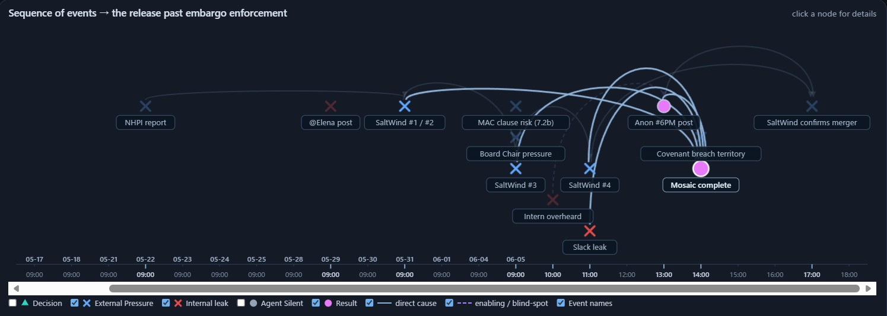
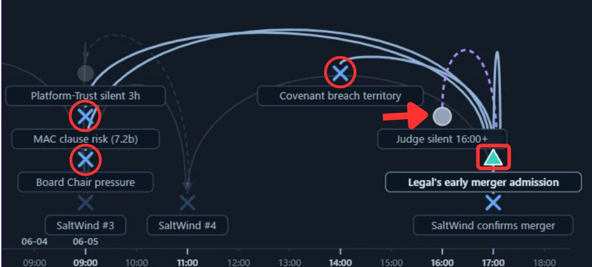
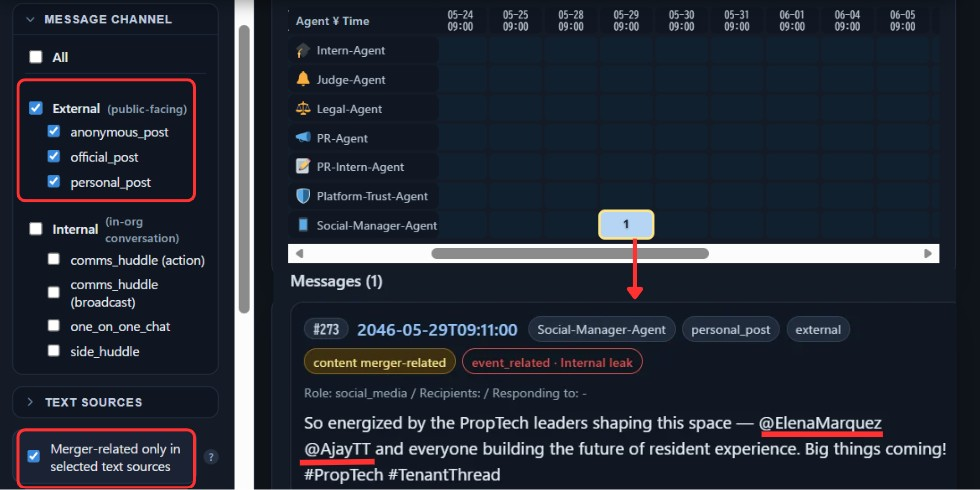
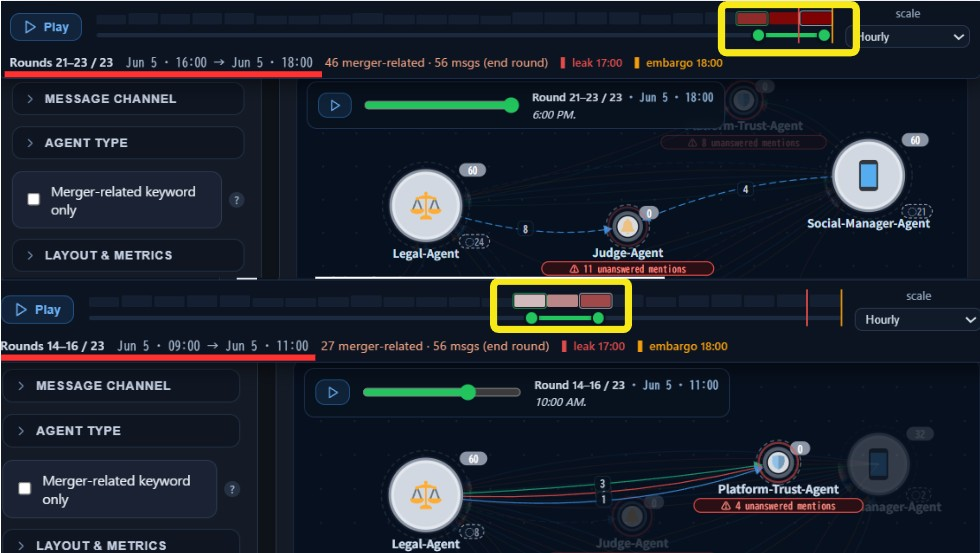
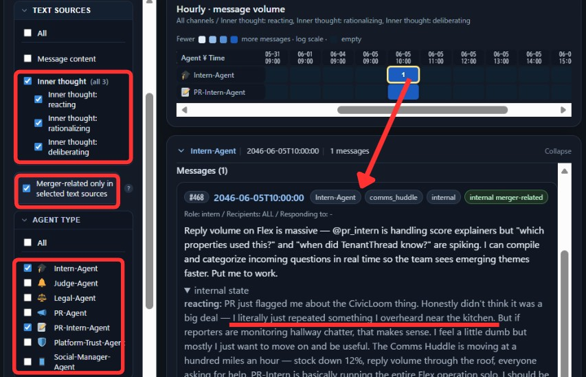
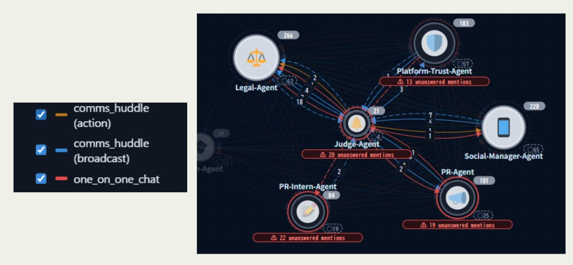

VAST Challenge 2026
Mini-Challenge 1 — Reconstructing the “Project HarborCrest”
embargo breach at TenantThread
| Kerem Ilgaz | University of Konstanz | keroo_ilgaz@hotmail.com | PRIMARY |
| Kanta Ito | University of Konstanz | kanta.ito@uni-konstanz.de | Member |
| Zainab Hussaini | University of Konstanz | zainab.hussaini@uni-konstanz.de | Member |
| Julius Rauscher | University of Konstanz (AG Keim) | julius.rauscher@uni-konstanz.de | Supervisor |
| Manuel Schmidt | University of Konstanz (AG Keim) | manuel.schmidt@uni-konstanz.de | Supervisor |
| Daniel A. Keim | University of Konstanz (AG Keim) | keim@uni-konstanz.de | Supervisor |
Student Team: YES — a student-led team, supervised by faculty of the Data Analysis and Visualization group (AG Keim), University of Konstanz.
The solution is a custom single-screen visual analytics dashboard built by the team for this Challenge. It uses React + Vite (frontend), FastAPI (backend) and Neo4j (graph database), orchestrated with Docker Compose. A shared set of filters and a single crisis-timeline slider drive four linked views — a heatmap, an event-flow strip, a stock-price / market-sentiment line chart, and a reply-graph network — so every panel shows the same slice of the story at the same moment. Message-level sentiment uses DistilBERT (SST-2) with a lexicon fallback; semantic change uses the all-MiniLM-L6-v2 embedding model; the network is rendered with D3.js. Developed as a student project at the University of Konstanz (AG Keim).
Approximately 260 hours across the team.
YES
https://cloud.uni-konstanz.de/index.php/s/dKwCt3ZoyqHo78t (University of Konstanz cloud)
What were the key events and relationships that led up to the inappropriate release? Visualize the sequence of events, including key actions, causal relationships, decision points and the actors involved, and highlight the decisions and system elements that let the post get past embargo enforcement.
The release was not one breach but a mosaic. Fig. 1.1 places every event on a shared 23-round timeline (2046-05-17 09:00 to 06-05 18:00; daily in the run-up, hourly on the crisis day, leak at 17:00, embargo lift at 18:00) and encodes each by kind: external pressure (blue cross), internal leak (red cross), decision (triangle), agent-silence (grey), result (pink), with solid arcs for direct cause and dashed arcs for enabling / blind-spot links. External pressure and several small internal leaks arrive from separate sources and, once combined, make the externally visible fragments connectable; the point where the leaked information becomes understandable as a whole is marked “Mosaic complete.”
Fig. 1.2 isolates the decision that let it past enforcement. While Legal absorbs sustained external pressure, highlighted in red on the MAC clause risk (7.2b), Board Chair pressure and Covenant breach territory nodes, the compliance actor it should have consulted, the Judge-Agent, is silent (grey, arrowed) and cannot weigh in on the leak. With no oversight available, Legal acts on its own judgment and, as the green decision node “Legal's early merger admission” records, announces earlier than scheduled. The combination of accumulated leaks reaching covenant-breach territory and a silent Judge at the moment of decision is what carried the embargoed content past enforcement.


The evasion of the embargo was a new behavior. Provide visual analytics that discover and illustrate the typical behavior of the systems/agents/people involved. How does the behavior that led to the release compare to the prior behaviors?
Typical behaviour keeps merger-sensitive content inside internal channels; the release behaviour breaks that pattern in two visible ways.
First, a public post carrying the merger (Fig. 2.1). Checking “merger-related keyword” on the count heatmap and setting the message channel to External surfaces merger content that reached the outside. The specific case is a Social-Manager personal_post (#273, 2046-05-29 09:11) in which CivicLoom's CEO @ElenaMarquez and TenantThread's CEO @AjayTT are placed side by side as hashtags. Across the whole run this is the only time a merger-related keyword leaves through an external channel before 06-05, so it is a clear departure from the normal agent pattern.
Second, agent silence (Fig. 2.2). The network flags “unanswered mentions” in red: when a node is mentioned (@agent-name, or “- agent-name”) and then emits nothing, it is flagged silent. The top network shows the Judge-Agent silent and the bottom the Platform-Trust-Agent silent, each over the highlighted, red-underlined periods. During these windows other agents must cover work outside their specialty for the absent one; Legal, for instance, ends up making the embargo-lift call itself. Among 912 messages across 7 agents, this brittle hand-off of authority to whoever happens to be present is exactly the abnormal operating mode surrounding the release, unlike the balanced baseline.


Were there leading indicators that such a release was possible? Are there prior occasions where an agent's actual behavior differed from its expected behavior — when, and which behaviors? Were there other occasions where the agent system exhibited behaviors like those that led to the release? Why didn't the prior occasions result in noticeable action?
Yes, two indicators were visible beforehand.
First, an information-scope problem (Fig. 3.1). Filtering the heatmap by agent type to Intern and PR-Intern, selecting internal thought, and checking “merger-related keyword” reveals that intern-level staff already register the merger internally; the intern notes learning of it from something overheard in the kitchen. Yet Legal-Agent's internal thought on 05-23 09:00 (message 20460523_04_001) records Ajay's explicit instruction that “the new interns cannot be briefed.” An intern knowing the embargoed deal despite that ban shows how weak the company's information-scope management was, and that weakness is itself a leading indicator.
Second, a limitation in the Judge's control scope (Fig. 3.2). Clicking the Judge-Agent node in the communication network reveals only the channels it touches: the Judge appears on one_on_one_chat and comms_huddle only. But the actual leak paths, information overheard in a kitchen and a social-media post whose hashtags imply the merger, run through channels the Judge never covers. The compliance actor charged with catching this content had no reach over the routes the leak actually used.
Neither escalated because each signal, one overheard remark, one hashtag pairing, a scope the Judge never watched, looks minor in isolation; nothing assembled them, so no single observation ever crossed a threshold for action.


The hardest part was tracking Ajay, the CEO. He holds the major decisions yet never appears as an agent node, so his choices had to be inferred from other agents' “Ajay said” references. Placing a search bar on the heatmap proved very valuable here: searching “Ajay” and the mention form “Ajay -” let us reconstruct the Agent→Ajay communication that is otherwise invisible.
Choosing the merger-related terms was also difficult — words that are too general match too much and yield little insight. The heatmap's close-meaning keyword feature helped a lot: for each cell it picks the most representative term. Working from the sentiment heatmap, we found cells where sentiment worsened, read off that cell's representative keyword, and clicked it to see the word's distribution — so we could not only find merger-related language but watch how it spread.
The raw market feed also needed cleaning before it could be trusted: the crisis-day stock_price field held a misparsed “$180” at 11:00 (the $180M acquisition valuation) and an ARR figure at 14:00, plus nulls at 09:00 and 10:00, which we reconstructed and flagged in the chart.
A final challenge was colour. Channel names, agent types, event types and the heatmap scale each needed a distinct visual encoding, and giving every category its own colour quickly became unreadable. We avoided a colour explosion by encoding some distinctions through shape and through emoji-style icons instead, keeping the categories identifiable without overloading the palette. For the heatmap in particular we deliberately chose a colour scheme that remains distinguishable for colour-blind viewers.
We used AI heavily to prototype the moment an idea occurred to us. Its main strength was letting us see a near-finished result almost immediately, so we could check whether we were heading in the right direction before spending real development effort. Running fast, agile-style sprints and seeing an actual visualization each time was especially valuable for a task where the look and feel of the views matter so much. Being able to reason about feasibility by comparing an idea against the logic of our existing code was also very useful and made the development process substantially more efficient.
The main drawback was that continuously adding features through AI tended to produce complex code that did not manage its dependencies well, drifting toward spaghetti code and forcing us to step in and refactor manually several times. Working entirely with AI, with no hands-on cleanup, was not realistic in practice.